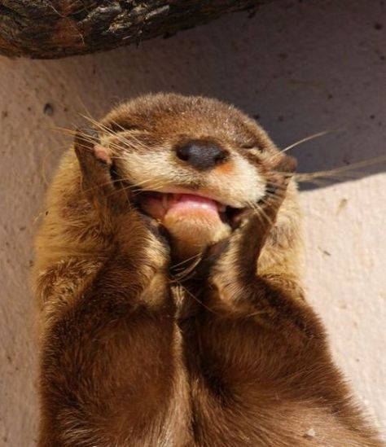
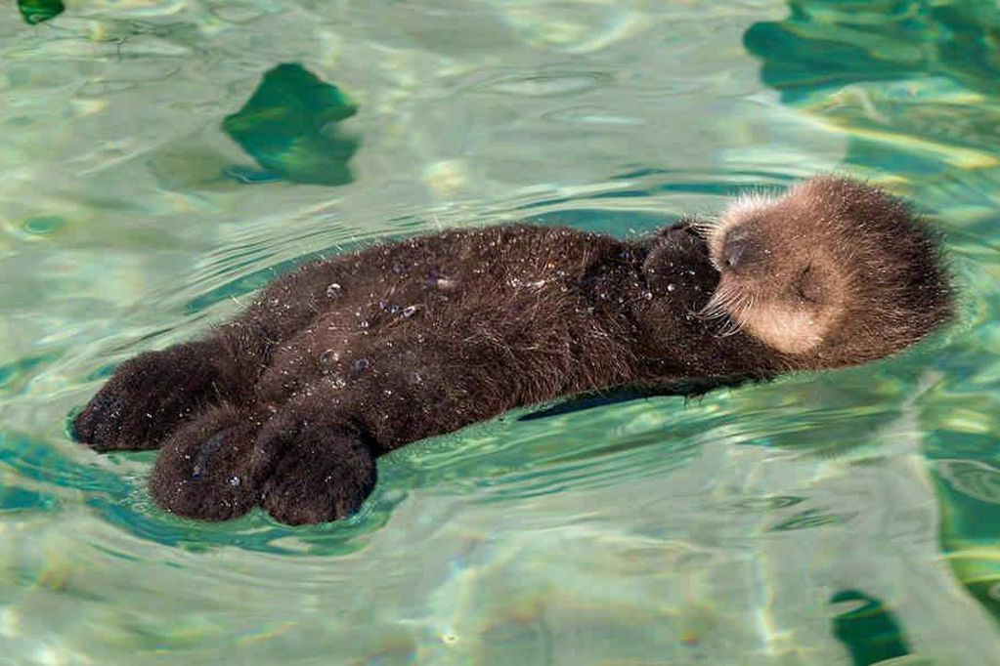
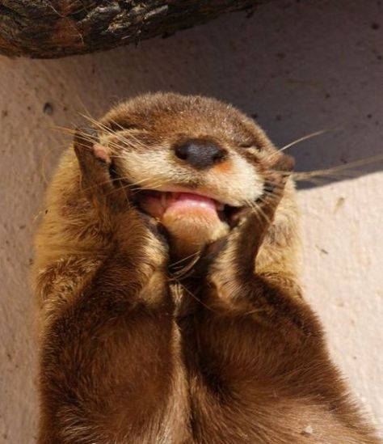
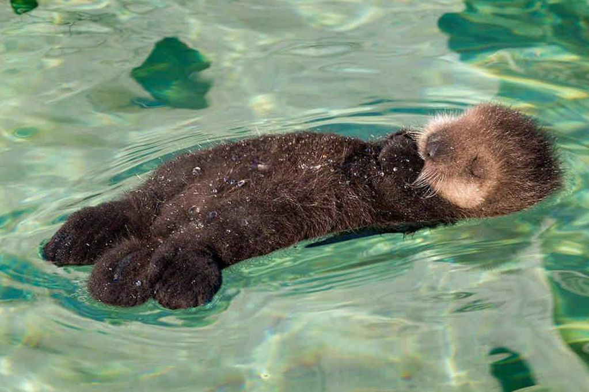

Si quieres saber más acerca de las nutrias, da clic en este enlace.
3 cosas que las nutrias aman:
3 cosas que las nutrias odian:
¿Tu nutria tiene piedrita de acompañamiento?
¿Qué tipo de personalidad tiene tu nutria?
 


